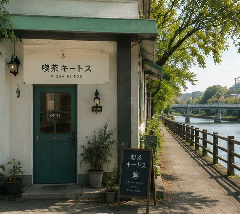
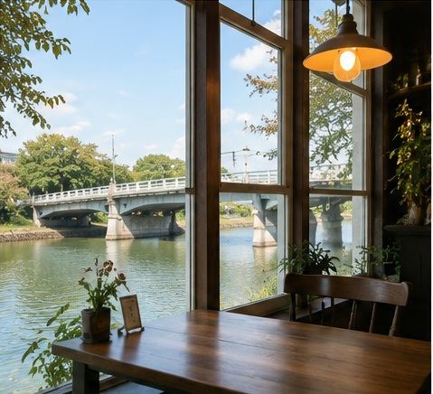
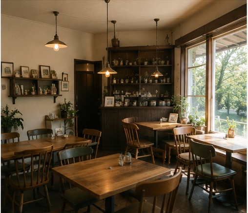
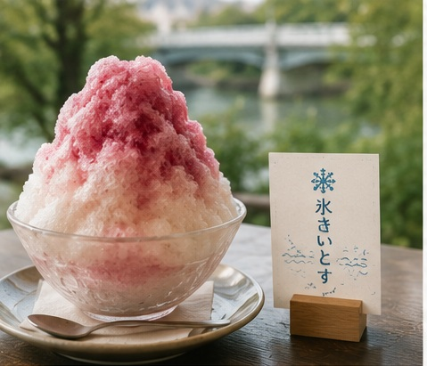
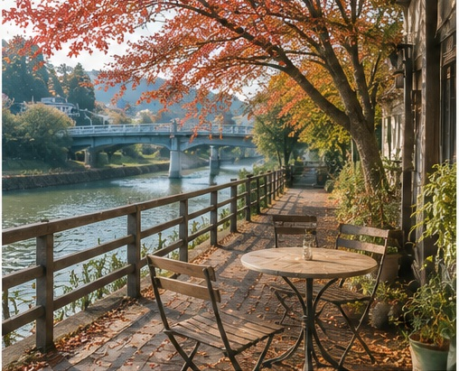

ABOUT
喫茶キートスが大切にしていること
喫茶キートスの店主のお名前や、詳しい開業の経緯については、公式な情報からは確認できません。
ただし公式サイトからは、秋田市八橋、おもかげ橋のすぐそばという立地を生かし、川沿いの静かな環境でコーヒーや食事、スイーツをゆっくり楽しめる時間が大切にされていることが伝わります。
夏の間だけ「氷きいとす」としてかき氷に専念するなど、季節に合わせた営業スタイルも、この店ならではの特徴のひとつです。

CONCEPT
公式サイトでは「秋田市八橋のおもかげ橋すぐ横にある喫茶店です」と案内されています。草生津川沿いの落ち着いた立地で、コーヒーや食事、スイーツをゆっくり味わえる時間が大切にされています。

STRENGTHS
公式サイトの案内をもとに、３つの強みとして整理しました。

公式サイトに「おもかげ橋すぐ横」と明記されています。川沿いの落ち着いた環境で、ゆったりとした時間を過ごせます。
落ち着いた雰囲気を保つ運営がされており、周囲を気にせず本を読んだりコーヒーを味わったりする時間に集中できます。
公式サイトに「７、８月は屋号を『氷きいとす』に変えてかき氷をご提供いたします」と明記されています。季節ごとに異なる魅力を味わえます。
ABOUT
喫茶キートスの店主のお名前や、詳しい開業の経緯については、公式な情報からは確認できません。
ただし公式サイトからは、秋田市八橋、おもかげ橋のすぐそばという立地を生かし、川沿いの静かな環境でコーヒーや食事、スイーツをゆっくり楽しめる時間が大切にされていることが伝わります。
夏の間だけ「氷きいとす」としてかき氷に専念するなど、季節に合わせた営業スタイルも、この店ならではの特徴のひとつです。
FEATURED
公式サイトの案内をもとに、喫茶キートスならではの体験として整理しました。

公式サイトでは「７、８月は屋号を『氷きいとす』に変えてかき氷をご提供いたします（喫茶はお休み）」と案内されています。この期間は通常の喫茶営業を休み、かき氷専門の営業に切り替わります。
HOW TO ENJOY
12:00〜16:00の営業時間内、おもかげ橋そばの喫茶店で、本を読んだりコーヒーを味わったりしながらゆっくり過ごせます。
7月・8月はかき氷専門の営業に切り替わります。川沿いで涼みながら、季節限定の時間を過ごせます。
お席の予約は受け付けておらず、営業日は公式サイトのカレンダーで案内されています。訪れる前の確認がおすすめです。
今の気分を５つの質問で選ぶと、喫茶キートスでの過ごし方のタイプをご紹介します。
対象のお客様：はじめて来店される方や、通常期と夏季（氷きいとす）のどちらに合わせて訪れるか迷っている方
解決したいこと：営業日が不定期でお席の予約もできないため、来店前に公式情報を確認する習慣を自然に案内すること
今後の展開案：営業状況やかき氷の売り切れ状況をリアルタイムで確認できる仕組みや、待ち時間の表示、テイクアウトの事前注文があれば、より安心して来店計画を立てやすくなります（これは新サービス提案であり、現在提供中のサービスではありません）。
STORE INFO

上記は公式サイトで確認できた情報です。電話番号・メールアドレスは公式サイト上で確認できなかったため、掲載しておりません。最新情報は店舗の公式案内をご確認ください。
CONTACT
営業日やお店の様子は、公式サイト・Instagramでご覧いただけます。